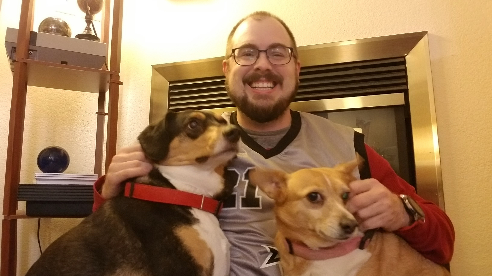

About Me
Good morning! My name is Justin Tucker and this is my portfolio page! I am a Technical Writer, FullStack Web Developer, and Media Editor with online collegiate teaching experience and multiple media editing experience. I have earned a certificate in FullStack Web Development from the University of Denver coding bootcamp. I am known to be a communicative problem-solver and hard worker, focusing first on handling the end-user experience. I am effective at seeing the bigger picture of the problem and working to ensure project completion.
I have previous collegiate experience as a Senior Instructor of English at the University of Colorado in Colorado Springs. At UCCS, I worked with hundreds of students, fellow faculty, and program administrators to provide and complete documents, teaching exercises, and classes up to their expectations and desires. This unique background gives me a great deal of experience at handling and working through different stakeholders and their expectations.
This website was created to highlight all my skills I have gathered from the coding bootcamp, my work experience, and even my education and hobbies. Above, you will see different portfolios for FullStack Web Development Coding, here, Technical Writing, here, and Media Editing, here.
If you have any comments, suggestions, or concerns, feel free to reach out to me at my contact page here.
Thank you!